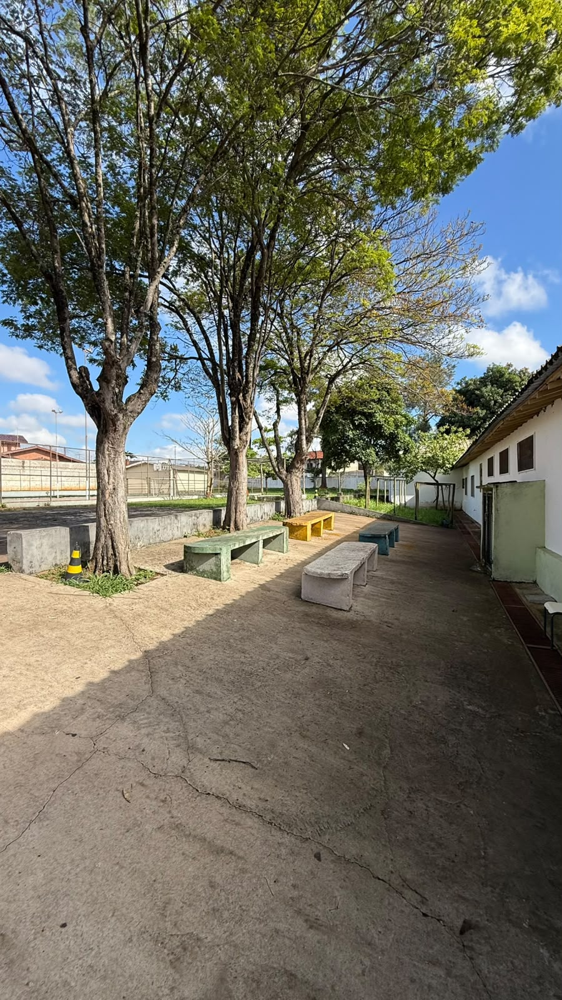
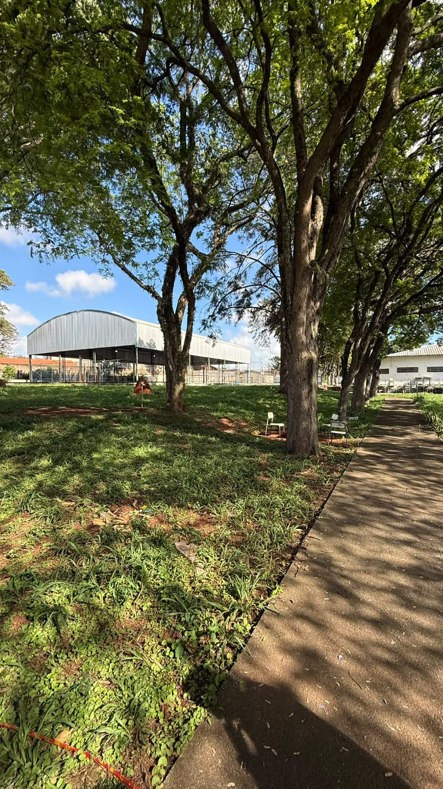

Sobre a escola
A Escola Estadual Presidente Arthur Bernardes da Silva é o tema deste projeto escolar, criado para apresentar seus espaços por meio de fotografias e de uma página desenvolvida com HTML e CSS.
A proposta é valorizar o ambiente escolar e mostrar um pouco dos locais que fazem parte do dia a dia da comunidade escolar.
Galeria de fotos
Conheça alguns espaços da nossa escola.




Sobre o projeto
Este site foi desenvolvido como um projeto escolar utilizando HTML e CSS.
HTML
Estrutura e organização do conteúdo.
CSS
Cores, layout, imagens e responsividade.